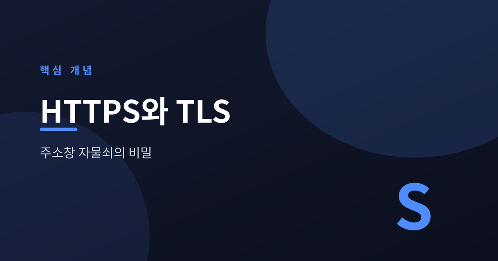
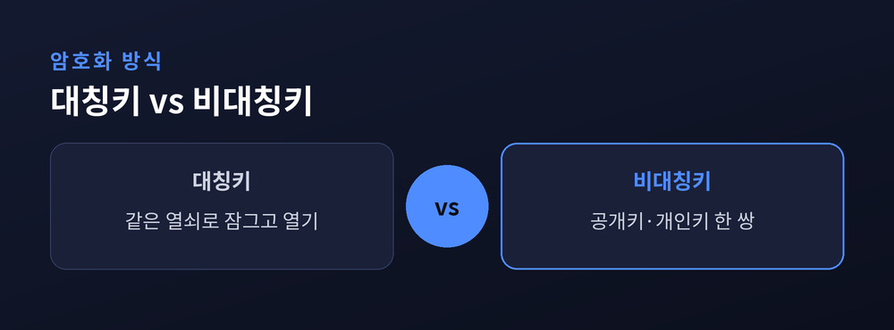
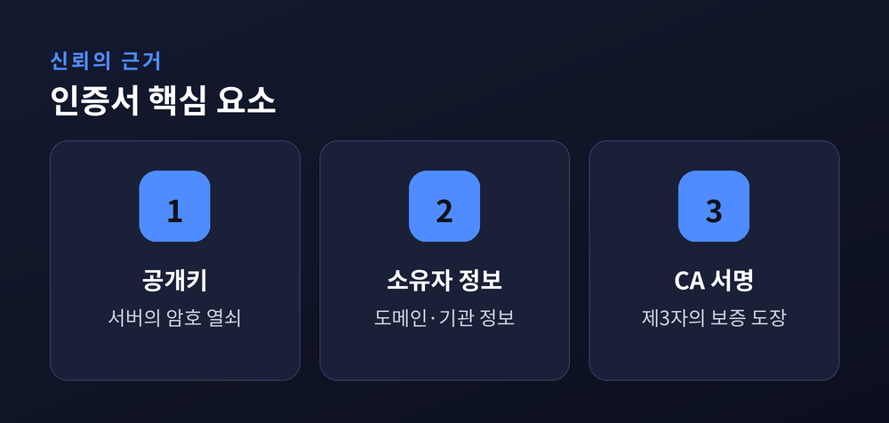
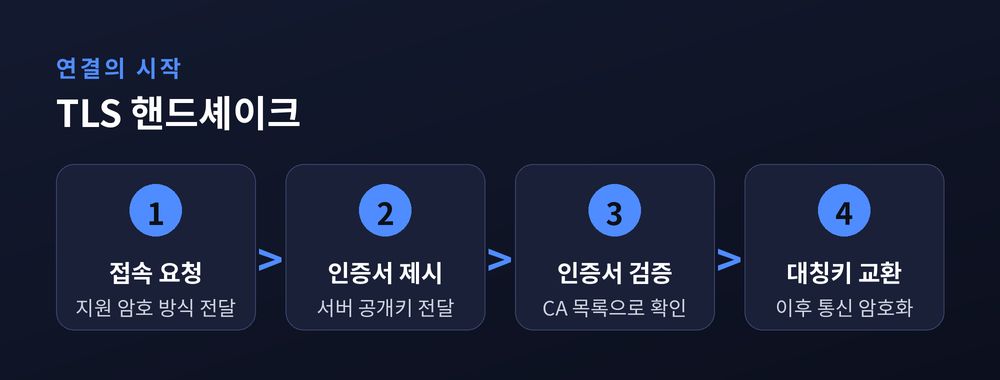

브라우저 자물쇠는 어떻게 안전을 지키나

오늘은 HTTPS와 TLS에 대해 이야기해 보려 합니다. 주소창의 작은 자물쇠 하나에 어떤 원리가 숨어 있는지, 차근차근 정리해 보겠습니다.
HTTP는 데이터를 그대로 주고받는 방식입니다.
아이디, 비밀번호, 카드 정보까지 평문으로 오갑니다.
같은 와이파이를 쓰는 사람이라면 누구나 그 내용을 들여다볼 수 있습니다. 심지어 중간에서 내용을 바꿔치기하는 일도 가능합니다.
HTTPS는 이 HTTP에 TLS라는 보안 계층을 덧씌운 것입니다. 통신 내용을 암호화해 다른 사람이 훔쳐보거나 조작하지 못하게 막습니다.
암호화에는 크게 두 방식이 있습니다.
대칭키는 하나의 열쇠로 잠그고 엽니다. 속도는 빠르지만, 그 열쇠를 상대에게 안전하게 전달하는 일이 문제입니다.
비대칭키는 공개키와 개인키, 한 쌍을 씁니다. 공개키로 잠근 것은 개인키로만 열립니다. 열쇠를 나눠 가질 필요가 없어 안전하지만, 속도는 느립니다.

TLS는 이 둘을 함께 씁니다. 처음 연결할 때는 비대칭키로 안전하게 약속을 하고, 이후 실제 데이터는 빠른 대칭키로 주고받습니다.
암호화만으로는 부족합니다. 지금 접속한 서버가 진짜 그 사이트가 맞는지도 확인해야 합니다.
이 역할을 하는 것이 디지털 인증서입니다. 인증서에는 서버의 공개키와 소유자 정보가 담겨 있습니다.
이 인증서를 발급하고 서명하는 곳이 CA(인증기관)입니다. 브라우저는 미리 신뢰하는 CA 목록을 가지고 있고, 그 CA가 서명한 인증서만 믿습니다.

인증서는 "이 열쇠의 주인이 맞다"는 것을 제3자가 보증해 주는 문서인 셈입니다.
브라우저와 서버가 처음 만나면 짧은 대화를 나눕니다. 이를 핸드셰이크라 부릅니다.

먼저 브라우저가 접속을 요청하며 지원 가능한 암호 방식을 알립니다. 서버는 인증서와 함께 자신의 공개키를 보냅니다. 브라우저는 인증서를 CA 목록으로 검증한 뒤, 앞으로 쓸 대칭키를 만들어 안전하게 주고받습니다.
이 과정이 끝나면 이후 통신은 모두 암호화된 상태로 이루어집니다. 최신 표준인 TLS 1.3은 이 절차를 한 차례 왕복으로 줄여, 이전보다 훨씬 빠르게 연결됩니다.
| 구분 | HTTP | HTTPS |
|---|---|---|
| 데이터 | 평문 전송 | 암호화 전송 |
| 신원 확인 | 없음 | 인증서로 확인 |
| 기본 포트 | 80 | 443 |
| 주소창 표시 | 경고 표시 가능 | 자물쇠 아이콘 |
표에서 보듯, 차이는 단순한 표시 문제가 아닙니다. 암호화 여부와 신원 확인 여부라는 근본적인 차이가 있습니다.
정리하면 이렇습니다.
주소창의 자물쇠는 대칭키와 비대칭키가 역할을 나누고, CA가 신원을 보증하며, 핸드셰이크가 그 모든 약속을 짧은 순간에 매듭짓는 결과물입니다.
작은 자물쇠 하나가 묻는다면, 그 안에는 이만큼의 절차가 조용히 자리 잡고 있다고 답하겠습니다.